Do I Need Radiation
If I Have DCIS?
A Complete, Patient-Centered Guide to
Making the Right Decision for You
Medically reviewed by Dr. Barry Rosen
Learn Look Locate Senior Medical Advisor
Understanding This Moment
A diagnosis of DCIS (ductal carcinoma in situ) often leads quickly to conversations about treatment—especially radiation therapy after lumpectomy.
For many women, those conversations begin long before there has been time to fully understand what DCIS is, how it behaves, or how decisions about radiation for DCIS are made.
So it is natural to ask:
Do I need radiation after being diagnosed with DCIS?
Or more specifically:
Will radiation therapy actually help me?
This is one of the most important—and often most overwhelming—questions in DCIS treatment. Understanding your biology is the key so you can know if radiation will truly help you.
This page is here to help you understand that question clearly, in a way that feels steady and grounded, so you can move forward with more confidence and less uncertainty.
Why This Decision Can Feel
So Complicated
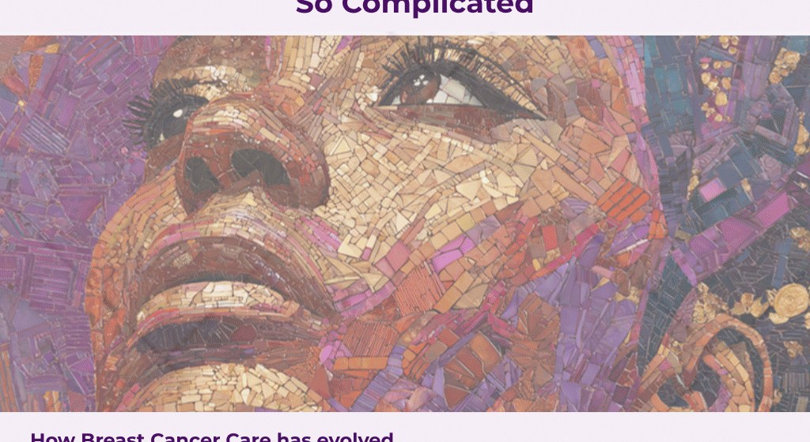
How Breast Cancer Care has evolved
For years, radiation after lumpectomy for DCIS was considered standard of care along with using Clinical Pathology features (age, size, margin status, palpability) to assess initial DCIS risk.
The goal was always to reduce the risk of recurrence.
But today, we understand something more important:
Not all DCIS behaves the same way.
The Shift in Breast Cancer Care
- Some cases carry a very low level of risk of recurrence
- Others carry a higher level of risk of recurrence
- And yet, they are all still called Stage 0 breast cancer
This is where things can begin to feel confusing.
When your care team discusses radiation, they are weighing:
- The risk of cancer returning in the same breast
- The risk of it returning as invasive breast cancer
Radiation reduces these risks—but not equally, for every patient’s biology is different.
What Is DCIS? Understanding the Biology
Before the Decision
A Clear Look at What’s Happening
Before deciding on treatment, it helps to clearly understand what DCIS is.
DCIS (ductal carcinoma in situ) means:
- Abnormal cells are present in the milk ducts of the breast
- These cells are contained within the duct
- They have not spread into the surrounding breast tissue
For this reason, DCIS is classified as:
- Stage 0 breast cancer
- Non-invasive breast cancer
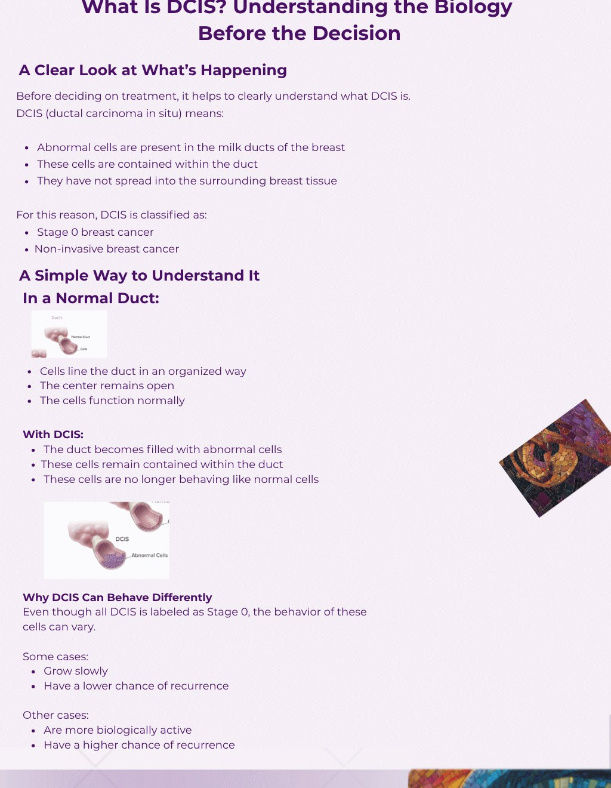
After a DCIS diagnosis, the next step is often a discussion about how to remove the abnormal cells.
For many women, this involves a surgery called a lumpectomy.
At the same time, it is important to understand:
This is not a one-size-fits-all process.
Each step is based on your individual situation.
What Is a Lumpectomy?
A lumpectomy is the most common surgical treatment for DCIS. (Also referred to as Breast Conserving Surgery)
It involves:
- Removing the area where the DCIS is located
- Removing a small margin of surrounding healthy tissue
- Preserving the rest of the breast
Bringing This Back to the Decision
This difference in an individual’s biology is the reason treatment is not the same for every patient.
It is not just about identifying DCIS.
It is about understanding:
What is my individual risk, and will radiation therapy benefit me to reduce my risk?
A More Personalized Way
to Understand Your Risk
At Learn Look Locate, we consistently hear:
“I didn’t even know there was a test that could help guide this decision.”
“I made my decision quickly—I wish I had understood my risk more clearly.”
Many patients:
- Are not aware that genomic testing exists for DCIS
- Do not fully understand their personal recurrence risk
- Feel pressure to make decisions quickly at the time of their consultation
Introducing the DCISionRT test by PreludeDx –
“A tool designed to look beyond what we can see.”
DCISionRT is a biology-based test for women diagnosed with DCIS.
DCISionRT evaluates a patient’s individualized biology with other risk factors to provide a personalized risk assessment.
It helps answer two critical questions:
- Your likelihood of recurrence
- Whether radiation therapy is likely to make a meaningful difference
This allows the decision to move from generalized guidance… to personalized understanding.
Why This Matters
This test does not tell you what to do.
It helps you better understand:
- What your risk may be
- How radiation may change that risk
- Whether that change is meaningful for you
How Does DCISionRT Work?
DCISionRT looks at the biology of your DCIS tissue and assesses seven different Biomarkers along with key pathways responsible for the progression of Breast Cancer.
- It can be performed on the initial image assisted core biopsy prior to breast conserving surgery.
- This will provide the earliest information about your cancer’s biology, and provide you and your healthcare providers a starting point for the best treatment options.
- No additional procedures are needed to perform the test.
Understanding Your Results
What the test provides:
- DCISionRT predicts the risk of future DCIS or Invasive Breast Cancer recurrence in the same breast over the next 10 years.
- It also predicts the benefit from Radiation therapy in reducing the Risk of DCIS or Invasive Breast Cancer after Breast Conserving Surgery.
- DCISionRT provides a summary of your risk as either “Low” or “Elevated” depending on your individualized tumor biology.
What Does “Low Risk” Mean?
“Low risk” means:
- The likelihood of recurrence is low
- Radiation therapy may provide little additional benefit
This can feel counterintuitive. Many women feel that doing more treatment will always provide more protection. But in some cases:
More treatment does not necessarily mean more benefit.
What Does “Elevated Risk” Mean?
“Elevated risk” means:
- There is a greater chance of recurrence
- Radiation therapy is more likely to meaningfully reduce that risk
This helps clarify when radiation may truly be beneficial.
Why This Matters
Even though two women may both be told:
“You have Stage 0 DCIS.”
Their level of risk—and their benefit from radiation—may be very different.
And that difference is what makes this decision feel so complex.
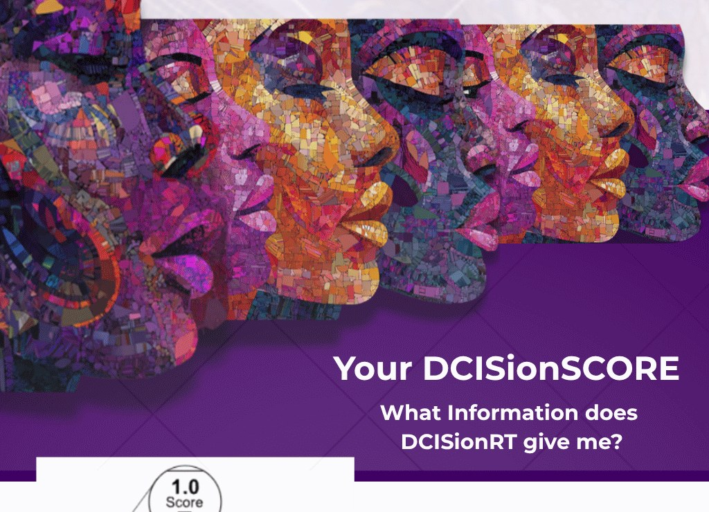
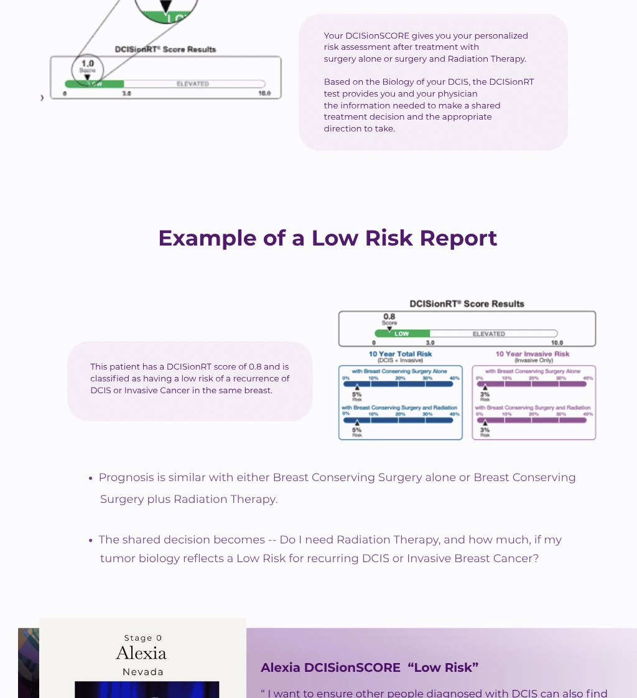
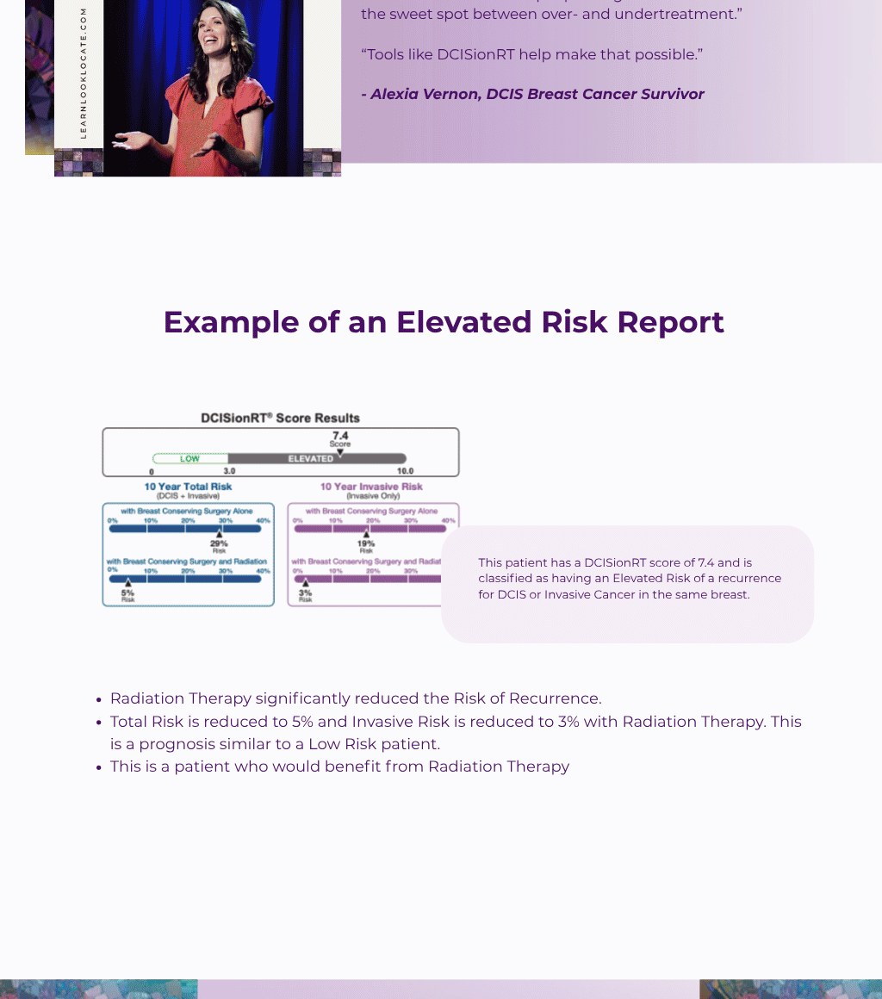
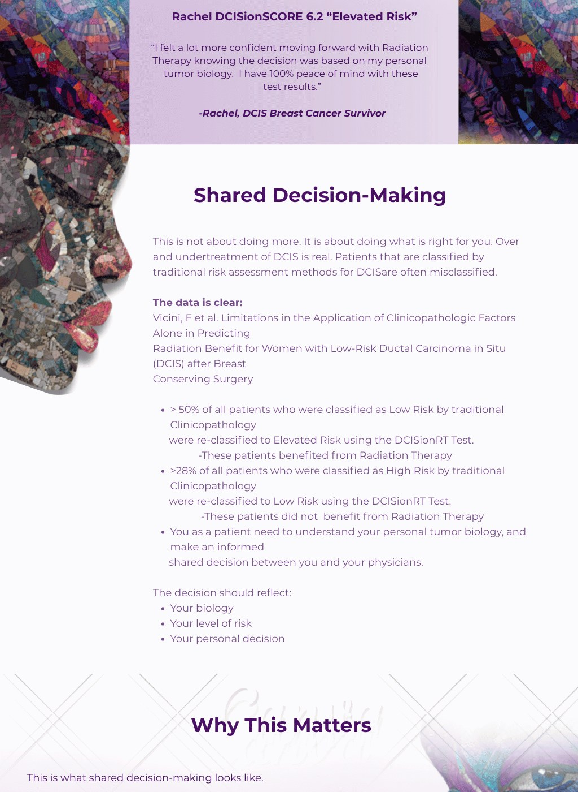
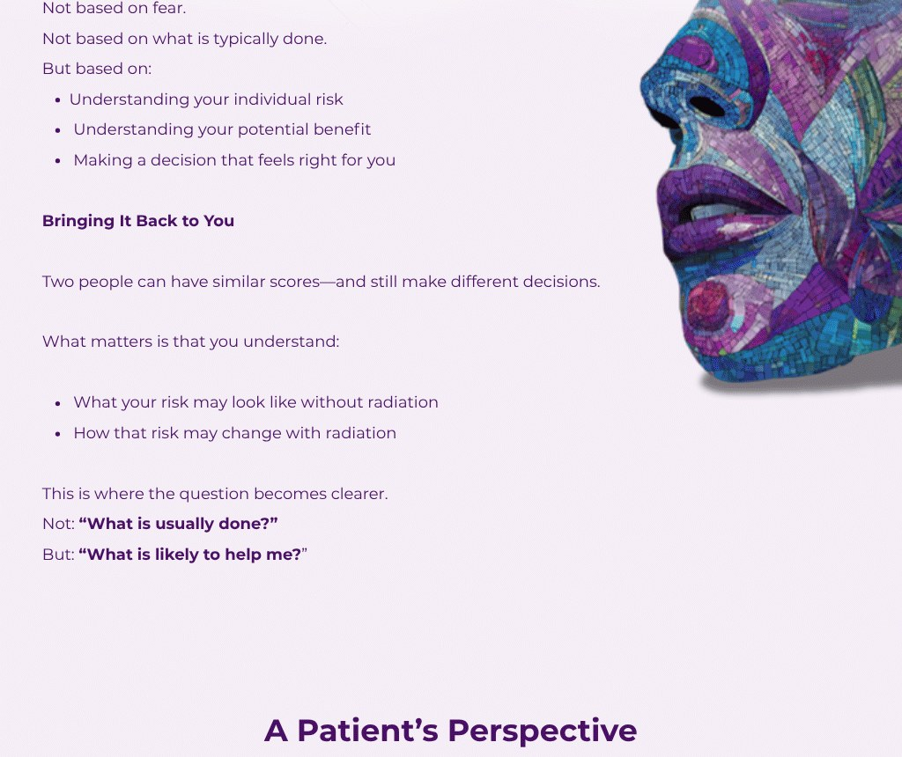
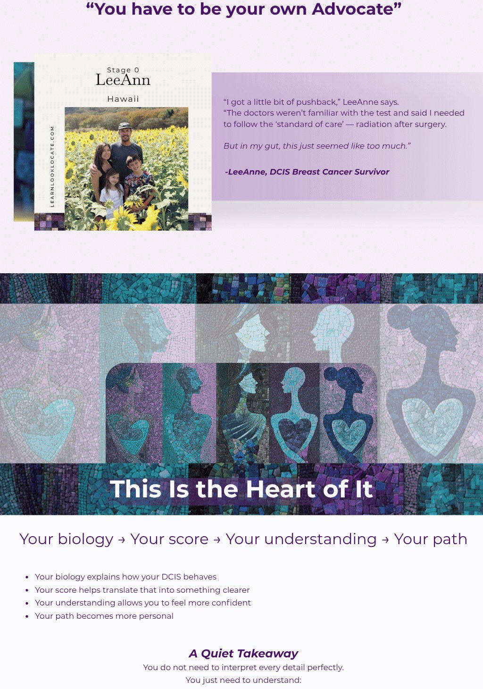
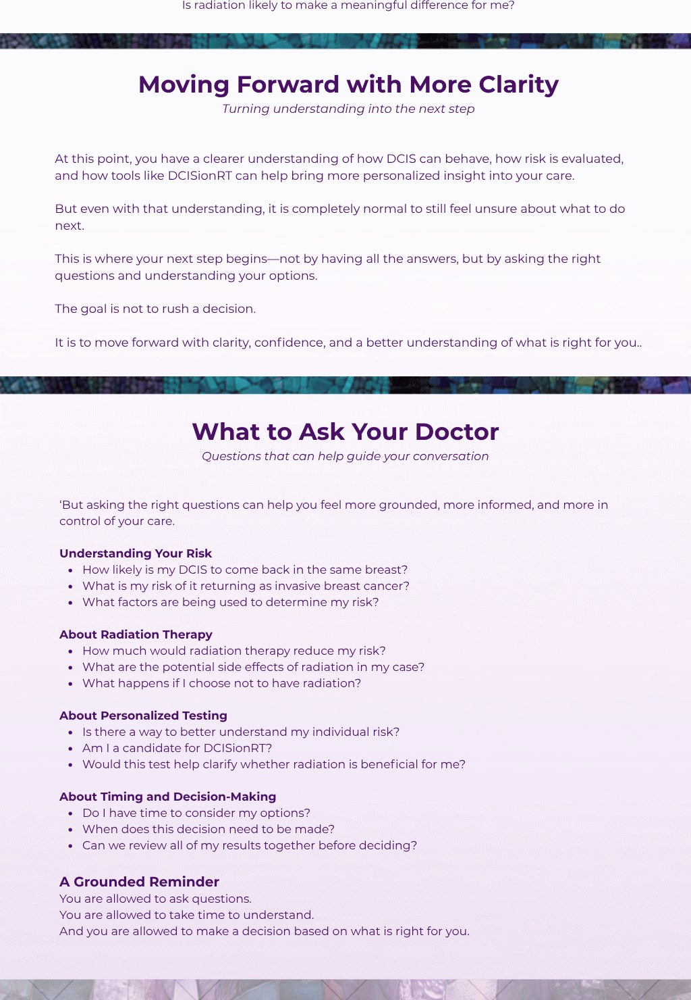
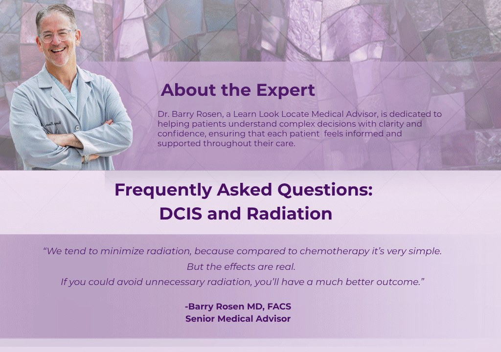
Your biology → Your score → Your understanding → Your path
- Your biology explains how your DCIS behaves
- Your score helps translate that into something clearer
- Your understanding allows you to feel more confident
- Your path becomes more personal
A Quiet Takeaway
You do not need to interpret every detail perfectly.
You just need to understand:
Is radiation likely to make a meaningful difference for me?
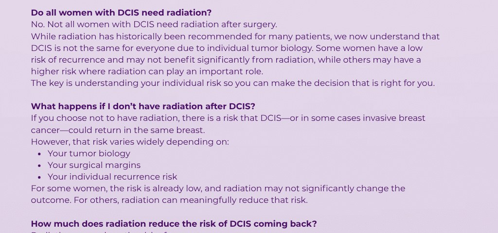
Moving Forward with More Clarity
Turning understanding into the next step
At this point, you have a clearer understanding of how DCIS can behave, how risk is evaluated, and how tools like DCISionRT can help bring more personalized insight into your care.
But even with that understanding, it is completely normal to still feel unsure about what to do next.
This is where your next step begins—not by having all the answers, but by asking the right questions and understanding your options.
The goal is not to rush a decision.
It is to move forward with clarity, confidence, and a better understanding of what is right for you.
What to Ask Your Doctor
Questions that can help guide your conversation
But asking the right questions can help you feel more grounded, more informed, and more in control of your care.
Understanding Your Risk
- How likely is my DCIS to come back in the same breast?
- What is my risk of it returning as invasive breast cancer?
- What factors are being used to determine my risk?
About Radiation Therapy
- How much would radiation therapy reduce my risk?
- What are the potential side effects of radiation in my case?
- What happens if I choose not to have radiation?
About Personalized Testing
- Is there a way to better understand my individual risk?
- Am I a candidate for DCISionRT?
- Would this test help clarify whether radiation is beneficial for me?
About Timing and Decision-Making
- Do I have time to consider my options?
- When does this decision need to be made?
- Can we review all of my results together before deciding?
A Grounded Reminder
You are allowed to ask questions.
You are allowed to take time to understand.
And you are allowed to make a decision based on what is right for you.
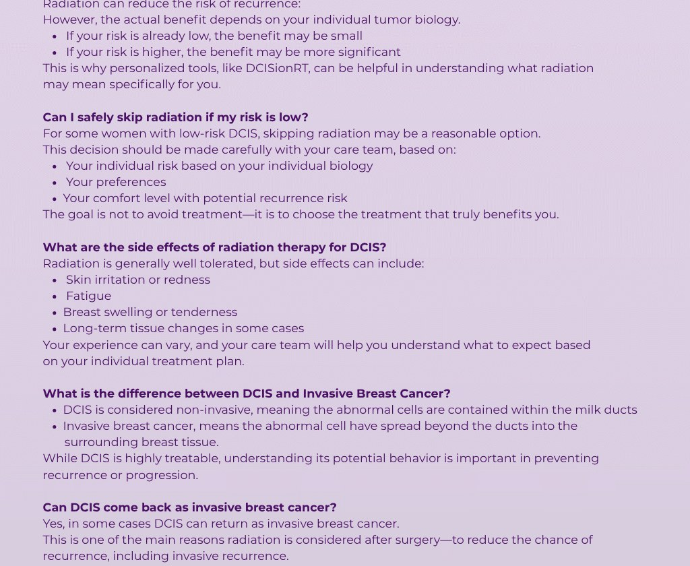
Frequently Asked Questions:
DCIS and Radiation
“We tend to minimize radiation, because compared to chemotherapy it’s very simple. But the effects are real. If you could avoid unnecessary radiation, you’ll have a much better outcome.”
—Barry Rosen MD, FACS
Senior Medical Advisor
Do all women with DCIS need radiation?
No. Not all women with DCIS need radiation after surgery. While radiation has historically been recommended for many patients, we now understand that DCIS is not the same for everyone due to individual tumor biology. Some women have a low risk of recurrence and may not benefit significantly from radiation, while others may have a higher risk where radiation can play an important role. The key is understanding your individual risk so you can make the decision that is right for you.
What happens if I don’t have radiation after DCIS?
If you choose not to have radiation, there is a risk that DCIS—or in some cases invasive breast cancer—could return in the same breast. However, that risk varies widely depending on:
- Your tumor biology
- Your surgical margins
- Your individual recurrence risk
For some women, the risk is already low, and radiation may not significantly change the outcome. For others, radiation can meaningfully reduce that risk.
How much does radiation reduce the risk of DCIS coming back?
Radiation can reduce the risk of recurrence. However, the actual benefit depends on your individual tumor biology.
- If your risk is already low, the benefit may be small
- If your risk is higher, the benefit may be more significant
This is why personalized tools, like DCISionRT, can be helpful in understanding what radiation may mean specifically for you.
Can I safely skip radiation if my risk is low?
For some women with low-risk DCIS, skipping radiation may be a reasonable option. This decision should be made carefully with your care team, based on:
- Your individual risk based on your individual biology
- Your preferences
- Your comfort level with potential recurrence risk
The goal is not to avoid treatment—it is to choose the treatment that truly benefits you.
What are the side effects of radiation therapy for DCIS?
Radiation is generally well tolerated, but side effects can include:
- Skin irritation or redness
- Fatigue
- Breast swelling or tenderness
- Long-term tissue changes in some cases
Your experience can vary, and your care team will help you understand what to expect based on your individual treatment plan.
What is the difference between DCIS and Invasive Breast Cancer?
- DCIS is considered non-invasive, meaning the abnormal cells are contained within the milk ducts
- Invasive breast cancer means the abnormal cells have spread beyond the ducts into the surrounding breast tissue
While DCIS is highly treatable, understanding its potential behavior is important in preventing recurrence or progression.
Can DCIS come back as invasive breast cancer?
Yes, in some cases DCIS can return as invasive breast cancer. This is one of the main reasons radiation is considered after surgery—to reduce the chance of recurrence, including invasive recurrence. Understanding your individual risk helps guide how important radiation may be in your situation. (See DCISionRT Reports) What is my potential 10-Year Recurrence Risk for Invasive Breast Cancer?
What is DCISionRT and how is it different from standard pathology?
DCISionRT is a genomic test that looks at the biology of your tumor. It is a test that utilizes 7 Biomarkers along with key pathways responsible for the progression of Breast Cancer.
Standard pathology tells us:
- Size
- Grade
- Margins
DCISionRT goes further by helping to predict:
- Your risk of recurrence over a 10-Year Period for both DCIS and Invasive Breast Cancer
- Whether radiation is likely to benefit you
It adds another layer of personalized information to support shared decision-making.
Should I ask my doctor about DCISionRT?
Yes. If you have been diagnosed with DCIS and are deciding about radiation, it is reasonable to ask your doctor if genomic testing like DCISionRT is appropriate for you. If you decide to ask your physician to run the DCISionRT test, it is most beneficial to ask for it to be run on the presurgical biopsy sample. Results can then be reviewed prior to additional procedures. Having a shared conversation regarding your DCISionRT result can help you better understand your options.
Who is Eligible to have the DCISionRT test?
- Female 30–85 years-old
- Diagnosed with Ductal Carcinoma in Situ (DCIS)
- All Grades accepted: Low, Intermediate, or High
- All Hormone Statuses accepted: ER+ ER-, PR+, PR-
Is DCISionRT covered by insurance?
- PreludeDx accepts all insurance plans including Medicare.
- Coverage may vary depending on your plan, and you may still be responsible for deductibles or co-pays.
- PreludeDx will work on your behalf to ensure your insurance company has processed the claim at the highest benefit level.
- PreludeDx does offer financial support programs – Contact their Billing Team for more information.
How long does it take to get DCISionRT results?
Results are typically available within 3–5 days after the laboratory receives your tissue sample. This allows the information to be used in real time when making treatment decisions.
How do I know if I’m making the right decision?
This is one of the most important and personal questions. The right decision is based on:
- Clear understanding of your risk
- Open and honest conversations with your doctor
- Your personal values and comfort level
When you feel informed and supported, the decision often becomes clearer.
Is this test validated?
Over 3,500 patients have validated this test with over 10 publications. To see more go to: https://preludedx.com/our-publications/
Why haven’t I heard about this test before?
Breast cancer care is evolving, and tools like DCISionRT are part of a growing movement toward more personalized treatment.
Not every patient is introduced to these options early in the process. Be sure to ask your physician about DCISionRT at your first consultation.
At Learn Look Locate, part of our mission is to ensure people are aware of all available tools—so they can make decisions with confidence, not uncertainty.
This decision is not about doing everything.
It is about doing what is right for you.
Understanding your options—including tools like DCISionRT—helps you move forward with clarity, not uncertainty.
At Learn Look Locate, we believe understanding your options should never feel out of reach—and that awareness of tools like DCISionRT is an essential part of more confident, personalized care.